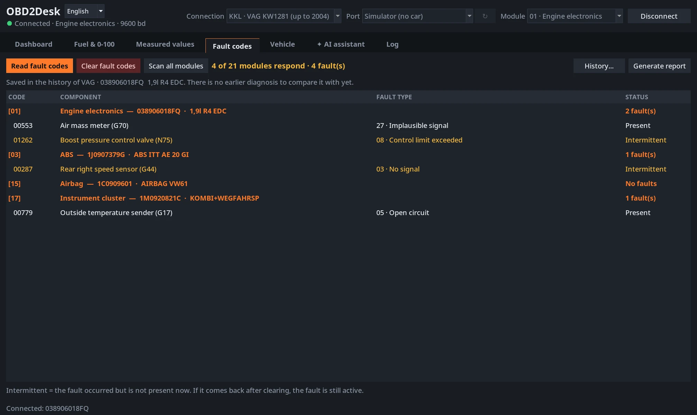
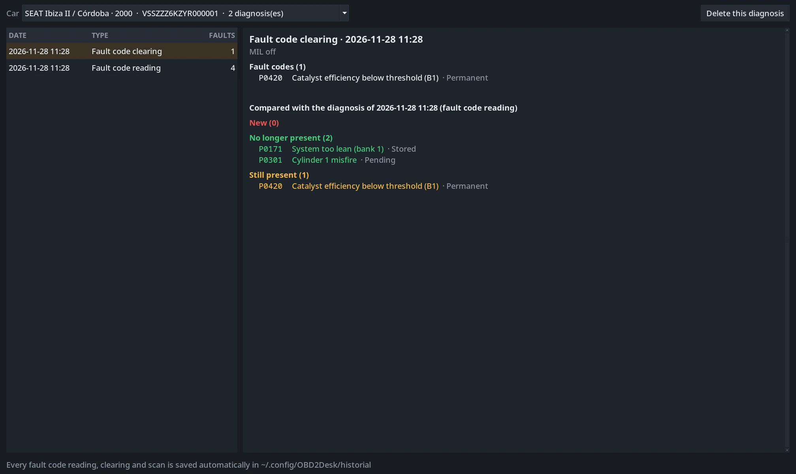
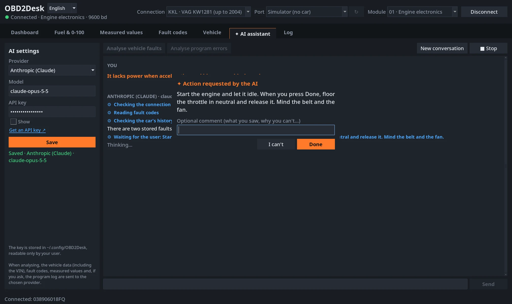
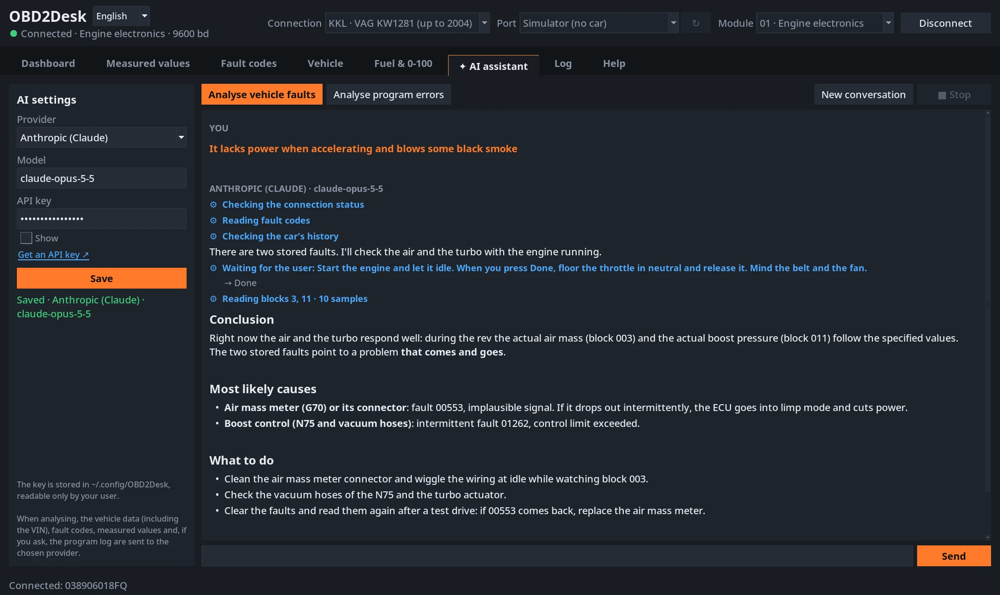

Free · Open source (MIT) · Windows and Linux
Diagnose your car
from your laptop
Fault codes, live values and an AI assistant that runs the checks for you. For older VAG cars with a KKL cable and for any car with OBD2.

Older VAG cars via KKL
Speaks KW1281, the protocol used by SEAT, VW, Audi and Skoda up to ~2004, which a regular OBD2 reader does not understand. Designed for the 1.9 TDI with EDC15, and it scans every module (engine, ABS, airbag, instrument cluster…) in one go.
Any OBD2 car with an ELM327
With a USB, Bluetooth or WiFi ELM327 it reads P0xxx codes (including pending and permanent), freeze frame data, readiness monitors for the emissions test, the VIN and dozens of live values from any OBD2/EOBD car. If automatic detection fails, it tries the K-line protocols (KWP2000 and ISO 9141) of pre-CAN cars one by one.
An assistant that checks
Describe the symptom: the AI reads the fault codes and values itself, asks you to start the engine or rev it, and gives you a reasoned diagnosis.
Everything it does
Live dashboard
Gauges and charts of the last 60 seconds. With the KKL cable you see RPM, injected quantity, actual vs. specified boost pressure, air mass, and N75 and EGR duty cycle. With an ELM327: RPM, speed, temperatures, load, MAF, throttle and voltage.
Fuel consumption and 0-100 timer
Instant and average consumption in L/100 km, litres used, distance and trip time, with a chart. It uses the fuel rate reported by the control unit if available; otherwise it calculates it from the mass air flow sensor or, on cars without one, from manifold pressure and engine displacement. It detects by itself whether the car runs on petrol or diesel.
0-100 km/h timer, which also gives you your 0-50 time. No need to press anything as you pull away: with the car stopped it waits, starts counting as soon as the car moves and stops by itself at 100. It keeps your latest runs and your best time. Only measure on a track or a place closed to traffic.
With the KKL cable (EDC15) it calculates consumption in L/h from the injected quantity; that control unit does not report road speed, so there is no 0-100 there.

Measuring blocks, graphs and logging
Pick VAG measuring blocks (001 injection, 003 MAF and EGR, 011 boost…) or the OBD2 PIDs your car supports, and watch them in a live table. Click a row (Ctrl+click, up to four) to see it in a live graph with the last minute.
CSV logging saves every reading with a timestamp. Open it later in the program's own CSV viewer: hover to see the values, drag to zoom into a section and check the minimum, average and maximum. It also opens in Excel or LibreOffice.

Fault codes
5-digit VAG codes with the component, the fault type and whether it is intermittent; also the 16xxx-18xxx codes of OBD-era VAG cars, translated to their P code. Scan all modules goes through engine, gearbox, ABS, airbag, instrument cluster, comfort… and lists the faults in each one.
On OBD2: stored, pending and permanent codes, the MIL status and freeze frame data: RPM, temperature, load and other engine values at the exact moment the fault was set.
You can clear them (it always asks for confirmation) and generate a report to print or save as PDF, handy for the workshop or when selling the car. Remember: clearing a code does not fix the fault.


History of each car
Every fault code reading, clearing and scan is saved automatically, car by car (it recognises the car by its VIN or its control unit). When you read the fault codes it tells you what has changed since last time: the new ones, the ones no longer present and the ones still present.
In History you can go through every diagnosis of each car, even when it is not connected. That way you know whether a fault came back after clearing it or has been there for a long time.


Vehicle info, other modules and emissions
Control unit identification (part number, software, coding). With the KKL cable you can access around twenty control units: gearbox, ABS, Climatronic, airbag, instrument cluster, immobiliser, comfort, radio…
On OBD2: the decoded VIN (manufacturer, country, year and model), ECU calibration, battery voltage and the readiness monitors: which emissions self-tests are complete, exactly what the inspection checks.

- Built-in simulator: try everything without a car by choosing the port “Simulator (no car)”.
- A single file: no need to install Python or anything else.
- Full communication log, with a debug mode, in case something goes wrong.
- Stable session: keeps the KW1281 connection alive and warns you if it drops.
- Diagnostic report in HTML, ready to print or save as PDF, with the comparison with the previous diagnosis.
- Update notice on start-up when a new version is out.
- English and Spanish: switch the language from the selector next to the program name.
✦ AI assistant: guided diagnosis
Not a chatbot that guesses: the assistant uses the program to test its hypotheses against your car's data.
- 1
Tell it what's wrong
“It lacks power when accelerating and blows black smoke.” Or press Analyse vehicle faults.
- 2
It checks on its own
It reads the fault codes, checks the history to see whether they are new or have appeared before, and reads or records the relevant blocks or PIDs during a rev or while the engine warms up.
- 3
It asks for help when needed
“Start the engine and give it a rev in neutral.” You press Done or I can't and it carries on.
- 4
Reasoned diagnosis
Causes ranked by probability with the evidence, what to do from cheapest to most expensive, and whether the car is safe to drive. If you ask, it leaves the report ready to print with its diagnosis.




Screenshots taken with the simulator. The readings and the action window are real; the diagnosis text is an example of how it responds.
Providers
Claude by Anthropic (default), OpenAI or DeepSeek. The model can be changed.
Cost
You pay for usage directly to the provider; the program is free. With Claude, a question costs cents and a guided diagnosis of about 10 checks is roughly €0.05 to €0.20.
Privacy
When analysing, the vehicle data (including the VIN), fault codes, measured values and, if you ask, the program log are sent to the provider you choose. Your key is stored only on your computer.
Which cable you need
It depends on the car. If it is a VAG car from before 2004 (especially diesels), you almost certainly need the KKL cable: many of them don't answer generic OBD2 even though they have the connector.
VAG up to ~2004 · KW1281
KKL VAG-COM 409.1 cable with FTDI chip
USB, around €10-20. Connects to the K-line (pin 7) of the diagnostic connector.
- FTDI FT232RL/FT232RQ chip. On Windows, the hardware ID should be
VID_0403&PID_6001. - Cables with a 4-position switch (Fiat ECU Scan) work: use position 1 for VAG.
- Avoid CH340/CH341 (
VID_1A86) and PL2303 chips: they can't do the 5-baud init properly. - ELM327 adapters with an HS-CAN/MS-CAN switch (meant for Ford) won't work, and the “K+CAN Commander” is not recommended.
- Fake FTDI chips exist: if the port shows up but doesn't communicate, try an older driver.
Any car with OBD2/EOBD
ELM327 adapter (USB, Bluetooth or WiFi)
In Europe, petrol cars from 2001 and diesels from 2003-2004. Available for under €15.
- USB or classic Bluetooth: pair it in the operating system and it shows up as a COM port (Windows) or
/dev/rfcomm0(Linux). - WiFi: connect the laptop to the adapter's WiFi network and choose the port “WiFi · 192.168.0.10:35000” (or type its address if different).
- Many clones claim “v2.1” but are incomplete v1.0; the program is built to work with them.
- BLE-only ELM327 adapters (some made for iPhone) don't work: they don't create a serial port.
- The ELM327 can't do KW1281: for an older VAG car you need the KKL cable.
The diagnostic connector is usually under the dashboard on the driver's side. An aftermarket radio can block the K-line: if it won't connect, unplug the radio to test.
Connecting a Bluetooth ELM327: pair it and choose its COM port
A Bluetooth ELM327 works like a wireless serial cable. When you pair it, the system creates a virtual serial port (a COM port on Windows, /dev/rfcomm0 on Linux) and the program talks to it just like a USB adapter. That's why in OBD2Desk you don't look for “Bluetooth”: you choose that port. Two steps: first pair it in the system, then connect from the program.
Windows 10 and 11
- Plug the ELM327 into the car and switch on the ignition: its light comes on.
- In Settings → Bluetooth & devices → Add device → Bluetooth, choose the adapter (usually called OBDII, OBD2 or V-LINK). If it asks for a PIN, try
1234,0000or6789. - Check which port it got: More Bluetooth settings → COM Ports tab, the one with direction Outgoing (for example, COM5). It also appears in Device Manager → Ports (COM & LPT) as “Standard Serial over Bluetooth link”.
- In the program: Connection ELM327, Port that COM, and Connect. The program usually preselects it.
It's normal for Windows to show it as “Paired” rather than “Connected”: the connection opens when you press Connect in the program. If there are two COM ports and one doesn't respond, try the other.
Linux
- Plug in the ELM327 and switch on the ignition.
- Pair it from your desktop's Bluetooth settings or with
bluetoothctl:scan on,pair AA:BB:CC:DD:EE:FFandtrust AA:BB:CC:DD:EE:FF(use the MAC address shown in the scan). - Linux doesn't create the port by itself. Create it with
sudo rfcomm bind 0 AA:BB:CC:DD:EE:FFand you'll get/dev/rfcomm0. Repeat this after each reboot. - In the program: Connection ELM327, Port
/dev/rfcomm0and Connect.
If you don't have the rfcomm command: on Fedora install bluez-deprecated; on Arch, bluez-deprecated-tools. On Debian, Ubuntu and Mint it comes with bluez.
An ELM327 accepts only one connection at a time: if you've used it with your phone (Torque, Car Scanner…), close that app or turn off the phone's Bluetooth before connecting from the computer.
Download and install
Free and open source. Every version is on GitHub Releases.
Windows 10 and 11 (64-bit)
⬇ Download .exe- Download it and run it; nothing to install.
- Windows SmartScreen will warn you the first time because it isn't signed: More info → Run anyway.
- FTDI cable: set the latency to 1 ms in Device Manager → Ports → USB Serial Port → Properties → Port Settings → Advanced → Latency Timer. This prevents communication drops.
Linux (64-bit)
⬇ .tar.gz packageUbuntu 20.04+, Debian 11+, Linux Mint 20+, Fedora, openSUSE, Arch…
tar xzf OBD2Desk-*-linux-x86_64.tar.gz
cd OBD2Desk
./instalar.sh
sudo usermod -aG dialout $USER- The installer adds it to the applications menu, without sudo.
./instalar.sh --uninstallremoves it. If you had the previous version (Toledo Diagnosis), it replaces it and keeps your settings. - The last command gives you permission to use the cable (on Arch the group is
uucp). Log out and back in. - Bluetooth ELM327: pair it and bind it with
sudo rfcomm bind 0 AA:BB:CC:DD:EE:FF.
Prefer the source code? With Python 3.10+ and tkinter: pip install -r requirements.txt and python gui.py. Instructions in the README.
Getting started
- 1
Try it without a car
Choose the port “Simulator (no car)”, press Connect and, in the Dashboard tab, Start reading.
- 2
Connect to the car
Ignition on (to read fault codes the engine can be off). Plug the cable into the OBD connector and the laptop, choose Connection and Port and press Connect (for Bluetooth, first pair it and find its COM port). With KKL it takes 2 to 6 s; with an ELM327, up to 25 s (up to a minute if it has to try the K-line protocols).
- 3
Read the fault codes
Fault codes tab → Read fault codes; on an older VAG car, Scan all modules to check the whole car. Save them with Generate report before clearing anything.
- 4
Watch the values
Dashboard for a quick look; Measured values to pick blocks or PIDs, graph them and record a CSV; Fuel & 0-100 for the trip.
- 5
Ask the AI for help
In ✦ AI assistant, save your key, describe the problem and let it run the checks.
Useful blocks on the 1.9 TDI (EDC15)
| Block | What it shows |
|---|---|
| 001 | RPM, injected quantity (mg/stroke), quantity adjuster voltage, coolant temperature |
| 003 | RPM, specified and actual air mass, EGR valve duty cycle → MAF and EGR |
| 004 | Specified and actual start of injection (rotary pump) |
| 008 | Requested quantity and limits by RPM and by air mass |
| 010 | Air mass, atmospheric pressure, intake manifold pressure, pedal |
| 011 | RPM, specified and actual boost pressure (mbar), N75 duty cycle → turbo |
| 013 | Smooth running per cylinder (if supported) |
For guidance only: names may vary by engine. The program computes the units with the formula sent by the control unit itself.
Troubleshooting
Won't connect with the KKL cable (“No 0x55 sync byte”)
Check that the ignition is on and the port is correct. Make sure the cable has an FTDI chip and not a CH340, that it isn't a fake FTDI and, if it has a switch, that it's in position 1. An aftermarket radio can block the K-line: unplug it to test.
It says “Keywords KWP2000”
The control unit doesn't speak KW1281 but KWP2000. Try an ELM327 in OBD2 mode.
The KKL session drops
On Windows, set the FTDI port latency to 1 ms (see Download). On Linux the program adjusts it automatically.
ELM327: “the vehicle does not respond to OBD2”
Switch on the ignition. If it's a VAG car from before 2004, it probably doesn't have generic OBD2: you need the KKL cable.
ELM327: older car with an OBD2 connector that won't connect (e.g. Mercedes)
Pre-CAN cars (roughly up to 2005-2007) speak OBD2 over the K-line, and with some cars and adapters the ELM327's automatic search can't find the protocol. That's why the program then tries KWP2000 (fast and slow init) and ISO 9141 one by one, and the Log tab shows which one worked. If it still doesn't respond, the car may not be OBD2-compliant despite having the connector (in Europe it's mandatory from 2001 for petrol and 2004 for diesel; many older Mercedes only answer the brand's own tools), or the adapter may be a cheap clone that doesn't handle the K-line well.
I can't find the Bluetooth ELM327's port
You don't choose Bluetooth directly: when you pair it, the system creates a serial port and that's what you select (step by step). On Windows, pairing creates two COM ports: if one doesn't work, try the other. On Linux you have to bind it with sudo rfcomm bind 0 <MAC> and choose /dev/rfcomm0.
How do I connect a WiFi ELM327?
The adapter creates its own WiFi network (usually called “WiFi_OBDII”, “OBDII” or “V-LINK”). Connect the laptop to that network, choose Connection ELM327 and, in Port, “WiFi · 192.168.0.10:35000”. If your adapter uses another address (for example 192.168.1.10), type it in the port field as ip:port. While connected to its network you won't have internet, so the AI assistant won't work at the same time.
Linux: “Permission denied” when connecting
Your user must be in the serial port group: sudo usermod -aG dialout $USER (on Arch, uucp) and log in again. The program itself tells you the exact command.
Linux (Ubuntu/Mint): the cable doesn't show up as /dev/ttyUSB0
The brltty service (for braille displays) grabs many USB-serial adapters. If you don't use it: sudo apt remove brltty.
The assistant says “Invalid API key”, “no credit” or “model not found”
Check the key and billing on the provider's website. If the model doesn't exist, change its name in the AI settings.
Windows warns that the program isn't safe
That's SmartScreen: the executable isn't digitally signed. Click More info → Run anyway. The source code is public on GitHub.
Project status
OBD2Desk is under active development. Here is what has been verified and what remains to be covered in the current version:
- Verified on real cars, including the new features in v0.3.0 (module scan, freeze frame data, monitors and report) and v0.5.0 (fuel consumption and 0-100, graphs, CSV viewer and history).
- Automated test suite with the built-in simulators: KKL cable with several VAG control units (EDC15 engine, ABS, airbag and instrument cluster), and ELM327 with a simulated OBD2 car.
- AI assistant validated with the real Claude and DeepSeek APIs.
- Compatible with Windows 10/11 and Linux (Ubuntu, Debian, Fedora, Arch and openSUSE).
- WiFi connection validated with the simulator; yet to be verified with a real WiFi ELM327 adapter.
- Focused on diagnostics (fault codes and measured values): adaptations, basic settings, coding and actuator tests are not included in this version.
If you use it on your car, your feedback helps improve it: share it on GitHub Issues.